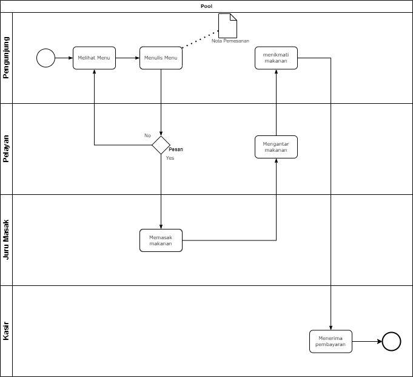
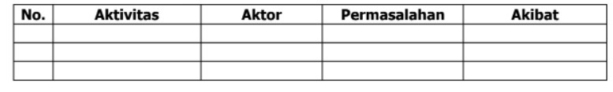

Berikut saya jelaskan terkait jawaban saya untuk Soal No. 2 dan No. 3
Gambarkan Proses Bisnis yang berjalan saat ini pada studi Kasus Anda !
Pada kesempatan kali ini saya menjelaskan bagaimana sebuah proses bisnis dapat berjalan pada sebuah Rumah Makan/Cafe, dimana ada 4 pihak yang berperan, yaitu Pelanggan, pelayan, Juru Masak dan juga Kasir
 Contoh gambaran proses bisnis disebuah CafeMasa lalu hanya bisa dipahami dengan menoleh kebelakang, sedangkan masa depan hanya bisa dilalui dengan melangkah kedepan.
Lakukan analisis pada permasalah yang terjadi pada proses bisnis studi kasus anda !
Setiap proses bisnis pasti akan menemui kesalahan, berikut saya jabarkan permasalhan yang ditemui
 Contoh gambaran permasalahan pada sebuah proses binis.Demikian yang bisa saya jabarkan, mohonmaaf bila banyak kekurangan karena memang untuk saat ini sedang dalam tahap belajar. terimakasih.